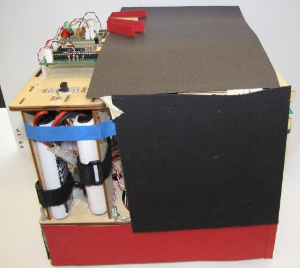

Project Overview
This year's challenge is a modified version of capture the flag. The playing field has two sides and five flags in predetermined locations. Each robot must bring flags to the goal region on its side. At the end of two minutes, whichever robot has the most flags in its goal region wins. The flags emit IR signals with 50% duty cycle. At each corner of the field is an IR beacon that emits a signal with either 30% or 70% duty cycle, depending on the side of the field it is on. As always, a flash starts the competition.
We designed our robot around the strategy of picking up three flags without any mechanical actuation, then returning to the goal and sitting. Since there are only five flags on the field, securing three guarantees a win. In order to fit three flags with 4" bases inside a robot with a 12" width, we designed the base to hold the flags with the front one slightly forward. The design causes the first two flags captured to settle in the corners, and the third to settle in front, all within the 6" width of the goal area.
In order to drive towards the flags, the robot uses two IR sensors positioned on either side of the flag entrance. The sensors detect duty cycle, as well as signal amplitude. Once the robot detects the duty cycle for a flag, it uses the amplitude and bang-bang control to drive towards it. The sensors for the corner beacons use the same circuit as the flag-detection circuits, but with a longer range and without the amplitude measurement. Two beacon sensors are on the top of the robot with a blinder in between in order to deduce signal direction.
The robot has three tape sensors in order to park the flags in the goalzone. Two tape sensors are just in front of where the flags sit, on either side of them, and one sensor is just behind the flags. The tape sensors distinguish between white, black, green paint, and green tape. The front sensors align the robot. If one of them hits the green paint (the goal region) before the other one does, the robot executes an algorithm that moves it around until both sensors hit the green paint at the same time, indicating that the robot is facing directly at the wall. The robot then moves forward until the back sensor is in the green paint, then stops with all of the flags in the goal region.